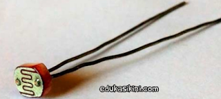
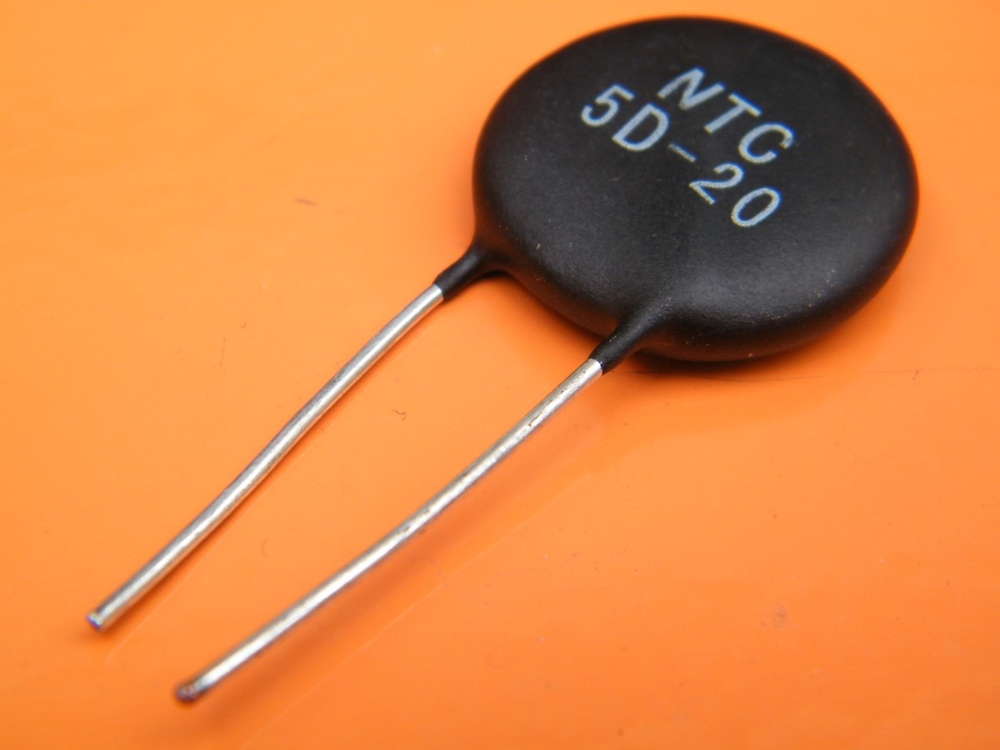
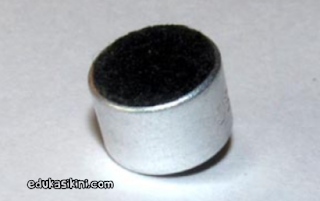

Dibawah ini adalah beberapa sensor yang sering digunakan pada kehidupan
sehari-hari:
| NO |
NAMA SENSOR |
HARGA |
GAMBAR |
DESKRIPSI |
| 1 |
LED IR |
Rp600 |

|
Sensor ini disebut sebagai Pemancar IR. Ini digunakan untuk
memancarkan sinar Inframerah. Rentang frekuensi ini lebih besar dari
frekuensi gelombang mikro (yaitu> 300GHz hingga beberapa ratus THz).
|
| 2 |
Photo Diode (Sensor Cahaya) |
Rp3.700 |

|
Ini adalah perangkat semikonduktor yang digunakan untuk mendeteksi
sinar cahaya dan banyak digunakan sebagai Penerima IR. Konstruksinya
mirip dengan dioda persimpangan PN normal tetapi prinsip kerjanya
berbeda dari itu.
|
| 3 |
LDR (Light Dependent Resistor) |
Rp500 |

|
Seperti namanya sendiri yang menentukan bahwa resistor itu bergantung
pada intensitas cahaya. Ia bekerja berdasarkan prinsip
fotokonduktivitas yang berarti konduksi karena cahaya. Ini umumnya
terdiri dari Kadmium sulfida.
|
| 4 |
Termistor (Sensor Suhu) |
Rp1.700 |

|
Resistansi termistor dapat bervariasi dengan kenaikan suhu yang
menyebabkan lebih banyak arus yang melewatinya. Perubahan aliran arus
ini dapat digunakan untuk menentukan besarnya perubahan suhu.
|
| 5 |
Load Cell (Sensor Berat) |
Rp58.000 |

|
Beberapa tegangan diterapkan pada sel beban, strukturnya bervariasi
menyebabkan perubahan resistansi dan akhirnya nilainya dapat
dikalibrasi menggunakan jembatan Wheatstone. Berikut adalah proyek
tentang cara mengukur berat badan menggunakan Load cell.
|
| 6 |
Strain Gauge (Sensor Tekanan / Gaya) |
Rp20.000 |

|
Pengukur regangan digunakan untuk mendeteksi tekanan saat beban
diterapkan. Ini bekerja berdasarkan prinsip resistansi, Pada papan
fleksibel, kabel disusun secara zig-zag seperti yang ditunjukkan pada
gambar di bawah ini. Jadi, ketika tekanan diterapkan pada papan
tertentu itu, papan itu membengkok ke arah yang menyebabkan perubahan
panjang keseluruhan dan luas penampang kawat. Hal ini menyebabkan
perubahan tahanan kabel.
|
| 7 |
Sensor Hall |
Rp1.500 |

|
Namanya sendiri menyatakan bahwa itu adalah sensor yang bekerja pada
Efek Hall. Hal ini dapat didefinisikan sebagai ketika medan magnet
didekatkan dengan konduktor pembawa arus (tegak lurus terhadap arah
medan listrik) maka beda potensial dikembangkan di seluruh konduktor
yang diberikan.
|
| 8 |
Sensor Fleksibel |
Rp155.000 |

|
Sensor FLEX adalah transduser yang mengubah resistansinya saat
bentuknya berubah atau saat ditekuk. Sensor FLEX berukuran panjang 2,2
inci atau sepanjang jari.
|
| 9 |
Mikrofon (Sensor Suara) |
Rp1.500 |

|
Mikrofon dapat dari berbagai jenis seperti mikrofon kondensor,
mikrofon kristal, mikrofon karbon, dll. Setiap jenis mikrofon bekerja
pada properti seperti kapasitansi, efek piezoelektrik, resistansi
masing-masing.
|
| 10 |
Sensor Ultrasonik |
Rp15.000 |

|
Sensor ultrasonik ini digunakan untuk menghitung jarak antara pemancar
ultrasonik dengan target dan juga digunakan untuk mengukur kecepatan
target. Sensor ultrasonik HC-SR04 dapat digunakan untuk mengukur jarak
dalam kisaran 2cm-400cm dengan akurasi 3mm. Mari kita lihat cara kerja
modul ini.
|